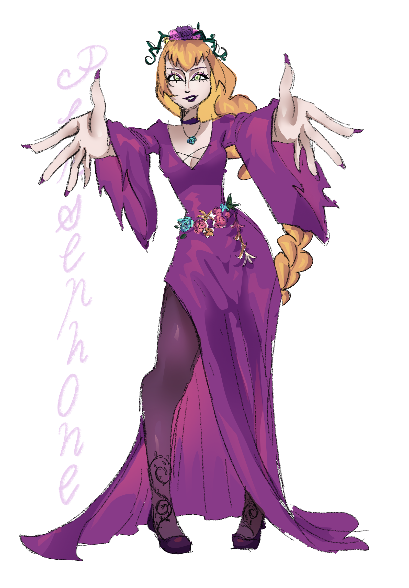

Information
เป็นธิดาของซุสและเดเมเตอร์เธอเป็นได้เป็นราชินีแห่งยมโลกในภายหลังถูกลักพาตัวโดยเฮดีสกษัตริย์แห่งยมโลก
Myth
ช่วงระยะเวลาที่เพอร์เซฟะนีไม่อยู่ มีสาวงามคนหนึ่งที่หลงใหลในตัวเฮดีสอยู่ไม่ใช่น้อย แรกๆฮาเดสก็ไม่เล่นด้วย แต่นาน ๆ เข้า มันก็ใจอ่อนหลงเสน่ห์จนได้ นางคนนี้ชื่อว่า มินธี พอเพอร์เซฟะนี มารู้เข้าก็โกรธมาก บุกไปด่านางมินธีถึงที่ ด้วยความที่นางมินธีก็มีความมั่นใจในตัวเอง จึงบอกไปว่าเพราะตนสวยกว่าไงเฮดีสเลยหลงจนลืมเพอร์เซฟะนี เพอร์เซฟะนีได้ยินแบบนั้นก็ไม่อยากฟังอะไรต่อแล้ว กระทืบนางมินธีจนจมดินเสียชีวิต แล้วไปเกิดใหม่เป็น "ต้นมินท์"